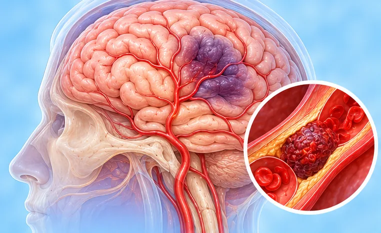

Brain embolism
A clot or particle travels in the blood and blocks a blood vessel of the brain
What it is
A clot, or another small particle, forms elsewhere (often the heart or a neck vessel), travels to the brain and blocks a vessel there. This is an emergency.
- Blood vessels of the brain
- More common with age
- Sudden weakness, speech trouble
- Which doctor
- Brain and nerve doctor (neurologist), heart doctor, hospital emergency team
- Common in
- Older adults; people with an irregular heartbeat or heart disease
- Contagious
- No
- Course
- Depends on how fast care starts; recovery varies from person to person
Common signs

Room feels like spinningVertigo Unsteady when walkingUnsteady gait 
Legs feel weakLeg weakness 
Racing, pounding heartPalpitations
Why it happens

SmokingTobacco use
Other causes
- An irregular heartbeat that lets clots form in the heart
- Heart valve problems or a recent heart attack
- Fatty build-up in the neck vessels that breaks off
See a doctor first if
- Face drooping, arm or leg weakness, or speech trouble: call 999 now
- Sudden loss of vision, or double vision: go to hospital now
- Sudden confusion, severe dizziness or loss of balance: go to hospital now
- Fainting, a fit, or a racing heart with chest pain: call 999
- Short spells of weakness that pass still need a doctor the same day
If any apply, please see a doctor before a session.
This page is general information. Please keep taking your normal medicine and keep seeing your doctor.
Keep taking your normal medicine and keep seeing your doctor. Our session is a gentle support and does not replace medical care.
Looking after yourself

See your doctor for check-upsRegular medical follow-up 
Stop smokingSmoking cessation 
Check your blood pressure at homeHome BP monitoring
More ways to look after yourself
- Ask your doctor to check your heartbeat if you often feel it racing
- Teach your family the warning signs so they can call 999
Tell your therapist
- A blood clot or a new swollen leg
- Blood-thinning medicine
- A heart condition
- High blood pressure
- Diabetes or less feeling in the skin
Your therapist will go through this with you before starting.
Questions and answers
What is Brain embolism?
A clot or particle travels in the blood and blocks a blood vessel of the brain. A clot, or another small particle, forms elsewhere (often the heart or a neck vessel), travels to the brain and blocks a vessel there. This is an emergency.
What are the common signs of Brain embolism?
Room feels like spinning · Unsteady when walking · Legs feel weak · Racing, pounding heart
Why does Brain embolism happen?
Smoking
How can I look after myself with Brain embolism?
See your doctor for check-ups · Stop smoking · Check your blood pressure at home
Can an AI Body Master session help with Brain embolism?
A session is gentle, needle-free meridian support for your wellbeing. It does not treat or cure Brain embolism and never replaces your medicine or your doctor. Tell your therapist about it before the session starts.
Related conditions
- Alzheimer's disease
- Viral meningitis
- Viral encephalitis
- Restless legs syndrome
- Stroke with bleeding (haemorrhagic infarction)
- Cluster headache
- Herpes simplex encephalitis
- Low intracranial pressure (intracranial hypotension)
- Absent periods (amenorrhoea)
- Difficulty getting pregnant (infertility)
- Bladder irritation symptoms
- PCOS (polycystic ovary syndrome)
References: General information based on public health sources such as Mayo Clinic, NHS, Cleveland Clinic and NCBI StatPearls.
Page updated: 2026-11-01